Tangible Interaction Design
PLANT COMPANION
In 2021, there were approximately 973 thousand males and 561 thousand females aged 16 to 44 living alone in the United Kingdom[1]. They crave love and emotional support. As a way to solve the loneliness problem, many young people living alone are eager to keep pets to accompany them, but they cannot due to...
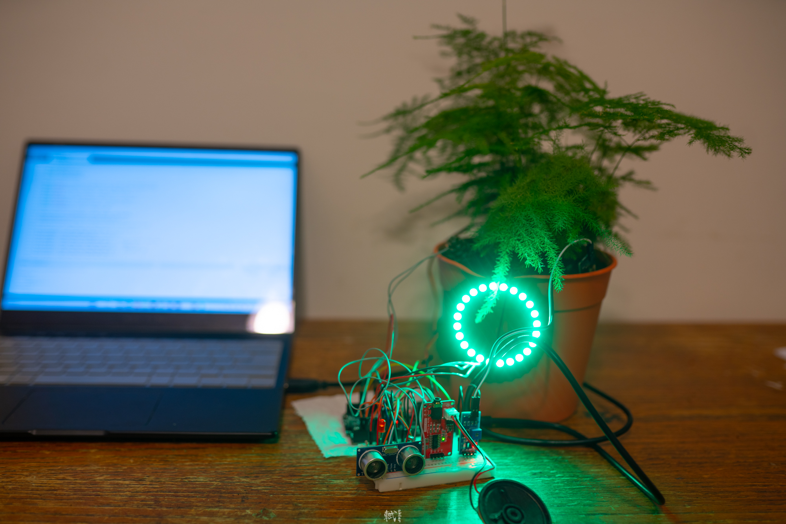
Introduction
In 2021, there were approximately 973 thousand males and 561 thousand females aged 16 to 44 living alone in the United Kingdom[1]. They crave love and emotional support. As a way to solve the loneliness problem, many young people living alone are eager to keep pets to accompany them, but they cannot due to various reasons. Many of them then choose to keep plants and regard plants as living companions.
This project discusses the design of a plant companion that enables plant keepers to have a better interactive experience in the process of caring for plants. When users take care of plants, they will in turn get responses and care from plants. It aims to alleviate the loneliness of young people and let young people gain physical and spiritual benefits, and also remind young people living alone to take care of themselves.
Users will get different responses from plants when they interact with them differently. These responses are carried through sounds, lights, and motion.
Plant Companion is designed to be placed in the homes of young people living alone.
The Arduino code used in this project can be seen here: Github.
Research and Related Works
Interview
Introduction of interview
A method of contextual semi-structured interview has been chosen to take both the advantages of structured interviews and unstructured interviews, which is conversational and comfortable for participants, and simpler to manage in terms of questions and time management[2]. I conducted an interview with four target users who lives alone and have kept plants before. Their habits, attitude, and emotions at different stages of keeping plants were investigated. Findings and key insights were drawn to define the behavior of the users and the feedback they received through keeping plants.
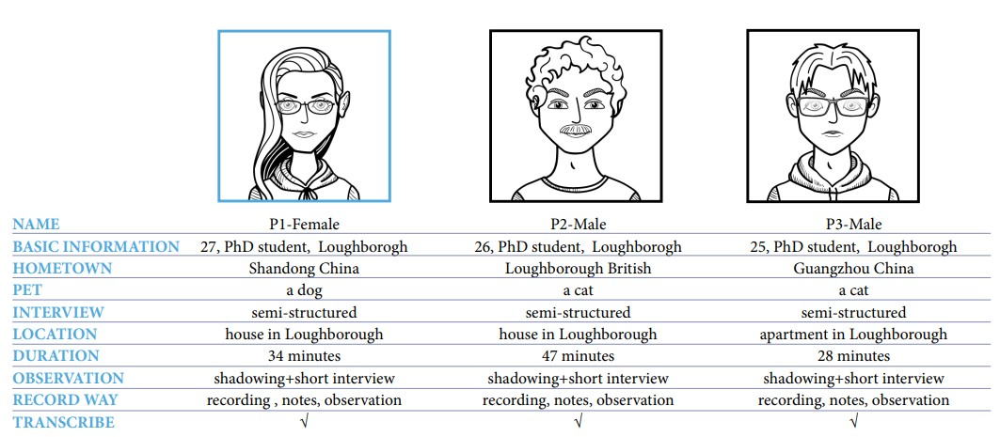
Ethics and Data Collection
: Participants completed reading the Interview Participant Information Sheet. All videos, pictures, and data are used with the permission of the participants. They all completed the interview with Informed Consent.
Findings
Participants鈥?reasons for keeping plants:
- All three participants mentioned that they want to keep plants to gain a better visual experience,
- Plants will make the environment more lively when they live alone, and they look forward to having fun through raising plants.
- One participant even believes that living plants would bring good luck.
Emotional changes in participants keeping plants:
All three participants felt that the process of keeping the plants fell short of their initial expectations.
- Two of them said that they did not get happiness because plants don鈥檛 have a lot of existence. Plants are easy to forget and are prone to death due to neglect and lack of care.
- Plants do not provide as much feedback as animals. When the freshness wore off, she felt that she was unable to get any emotional benefit from her plant.
- Problems Participants Have When keeping Plants
- They all mentioned the lack of sunshine in the UK, and they often forgot to move the plants to a sunny spot.
- They tend to forget to water. They are also unsure of how often and how much to water, which usually keeps the plants alive for no more than two months.
- Freshness of keeping a plant wears off and the process becomes boring, unless habits are formed.
- Participants also mentioned that they are usually so busy that they often forget to take care of themselves, so they are more likely to forget about their plants.
All three participants mentioned that the biggest problem was that the plants were prone to dying.
Key Insights
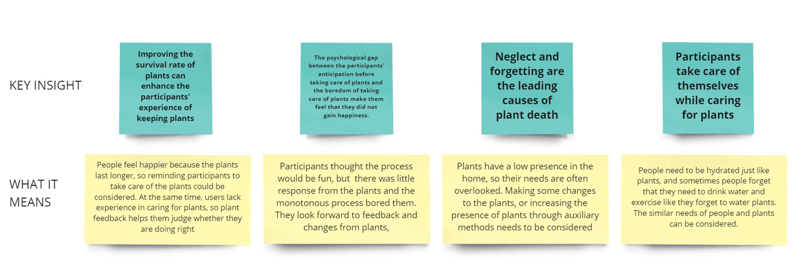
Secondary research about human-plant interaction
Secondary research is used as a method to explore deeper for more possibilities for plant interaction. This research aims to explore two aspects of human-plant interaction: How exactly do plants interact, and how do people benefit from the interaction.
Key Insights
According to the secondary research, three key insights are shown which relate to the plant companion project. 1. Improving the physical and mental health of people through physical interaction with plants, meaning that interaction with plants can benefit users鈥?health. 2. Simulating and expressing humanlike feelings through plants can improve psychological health, which means that we can use light and sound humans accept to give feedback to them. 3. Plants can transmit information through changes in their own state, which means that we can obtain information by exploiting the special characteristics of some specific plants or using them as biosensors.
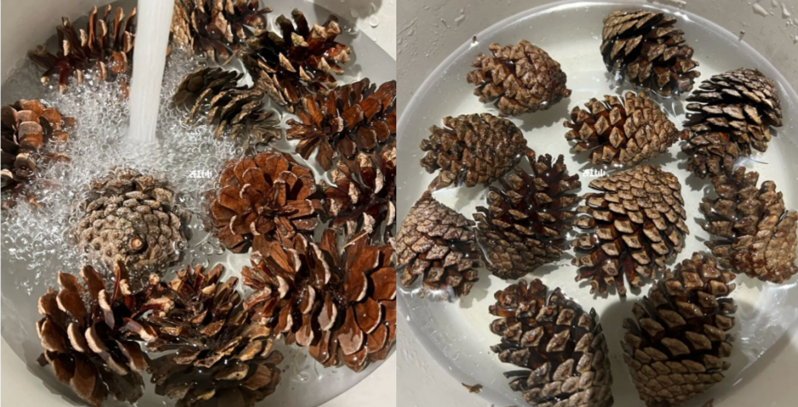
The Idea
An idea related to human-plant interaction gradually formed. The basic concept is to enhance the interaction of plants and provide plants with the ability to show noticeable feedback with the help of electronics and sensors. It is hoped that this interaction will enhance the merits of keeping plants and bring mental benefits to the user. The plant will be able to collect data from the environment and the user, then react accordingly, giving sensory feedback to the user to create a sense of warmth and company.
How the idea was formed
The design idea comes from the problem of loneliness and the seven key insights mentioned above. The theme is: Play with your plants. Plants can react to human interaction. Plant feedback is divided into two parts: reminders and feedback after behavior.
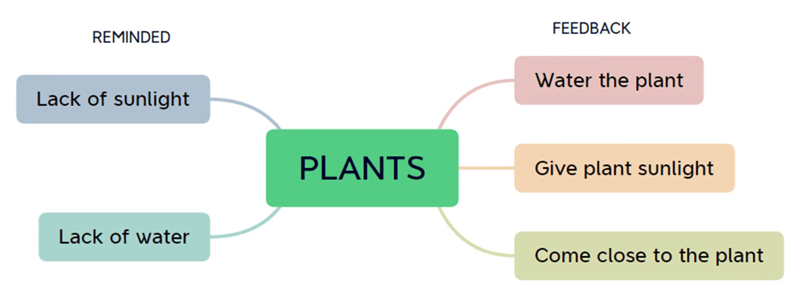
Materials needed
The initial idea is based on plants. For the plant to be able to display motion feedback effectively, it needs to be shaken by a servo motor. Therefore plants with soft stems and abundant leaves are chosen for the best results. Arduino and various sensors are needed for the electronics. They will collect data, process data, and give reactions in response to the inputs.
Sensory Engagement
The core of the interaction is for the plant to collect environmental and user data: light intensity, soil moisture level, pine cone moisture level, and user distance from the plant. These data are processed to define which state the plant is in, which in turn will decide how the plant will react: By changing the color and mode of the LED ring, by playing different music / saying different advice, and by giving motion feedback through shaking.
To achieve these functions, secondary research and initial testing on Arduino sensors and components are done.
Secondary research on software and coding
Secondary research on the sensors is done to explore how the functions and coding can be realized. The secondary research is based mostly on online tutorials, examples, projects, and documents.
Light sensor
The light sensor used is a simple light-sensitive resistor. The resistance value changes with light intensity, which could be read out using a voltage divider circuit and an analog pin on the Arduino.
Ultrasonic sensor
When researching the ultrasonic sensor, I came across a library in the library manager of Arduino. This library provides a single function that measures the distance easily. According to the provided example, the ultrasonic sensor worked very well in a prior test. [5]
MP3 module
According to online searching, the MP3 module communicates with Arduino using serial UART protocol. A tutorial uses the software serial library to utilize two digital pins on the Arduino as UART ports. Special HEX instructions are sent using UART to the MP3 for control. To ensure the MP3 works correctly, a simple test program was written according to the tutorial. I was able to play a piece of music using Arduino. [6]
Servo motor
The official Arduino website has a tutorial on servo motors. [7] The sweep example was chosen to test the servo motor. There are three connections to the servo motor: VCC, GND and a control line that is connected to a digital pin. The servo library allows us to control the servo precisely to degrees using the provided functions.
Initial testing of the sensors and components
The LEDs can light up in different colors and show different "emotions" depending on the input data
MP3 player can play sounds and allow the plant to "speak"
The servo motor allows the plant to wave its leaves
The light sensor detects if there is enough light for the plant
The ultrasonic sensor can detect distance and can be used to detect human motion.
Pine cones are used as boi-sensors for measuring humidity and a feature switch
Pine cones close up when there is water, therefore we can use a DIY switch (two metal contacts attached to the pine cone) to detect if the pine cone has closed up or not.
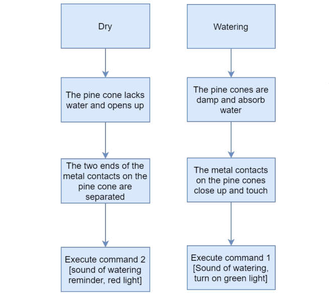
My early prototypes have established proof of concept for the bio-electrical system and started to test different interactions. We continue to refine the early prototypes.
According to the result of the interview, participants wanted feedback after caring for the plants, such as whether they had absorbed enough water, so whether or not the properties of the pine cone allow it to be used as a sensor for detecting water came to my mind.
What the idea wants to achieve
According to the secondary research which mentioned that several categories of physical and mental benefits can be obtained from human-plant interactions. The benefits that plants bring to people are defined in two parts: physical health and mental health.
Physical care:
- take the plant for a sunbath when the plant asks for sunlight, and remind the user to stretch and take a break in the meantime.
- water the plants and also remind the user to drink water
Mental care:
- gain emotional value from the interactions with the plant (ultrasonic sensor, sound)
- feel the energy of the plant when the plant greets you (servo motor, LED lights)
The key concepts in the idea
According to the key insights, several key concepts are being considered. 1. Substitute human emotions into plants, using lights, sounds, and motion to reflect plant feedback. 2. While reminding plants, let plants remind users to care for themselves. 3. Testing pine cones as a biosensor for humidity
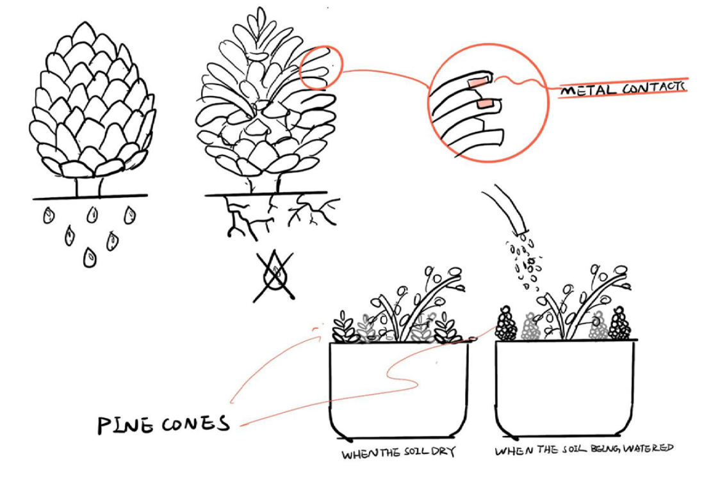
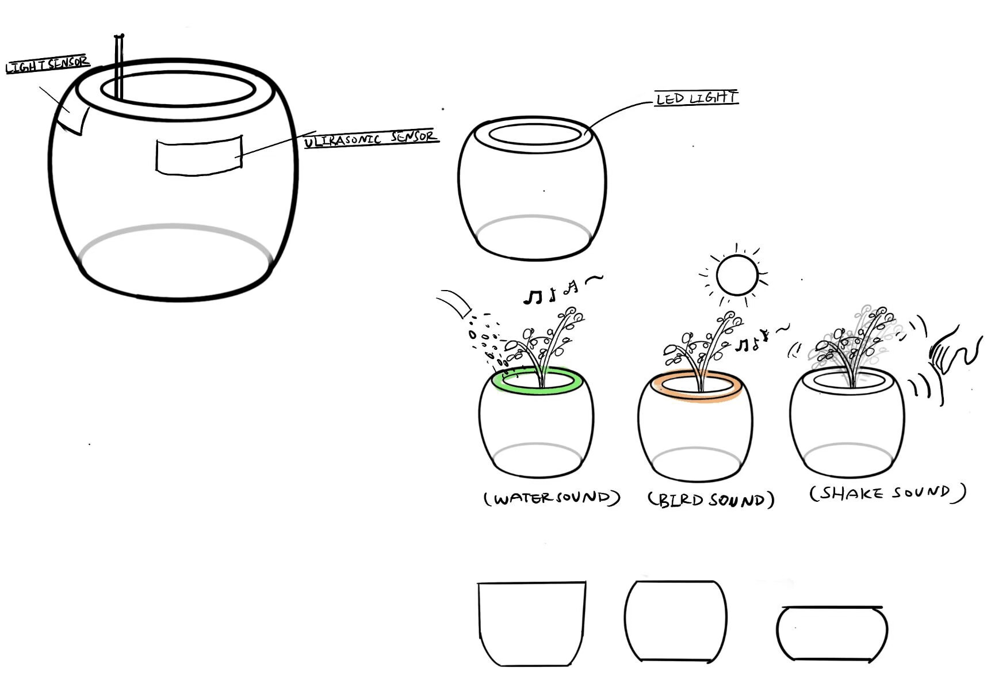
The Making
In this part, Plant Companion comes to life as the idea was built using Arduino. Since each individual component has already been tested, it was a matter of combining all the different codes for the components into one Arduino sketch and ensuring that all the sensors operate according to their designated routine.
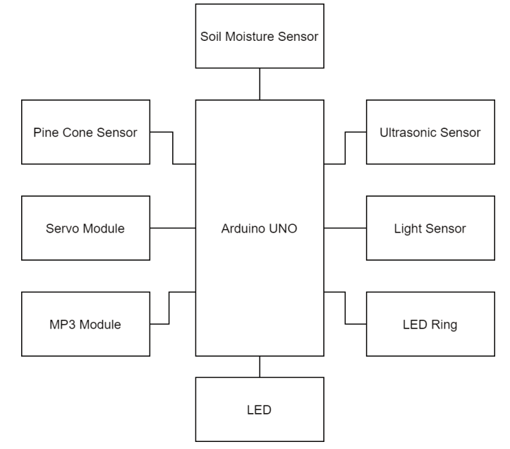
The ultrasonic sensor and servo sensor were the first to be added. The distance measurements from the ultrasonic sensor were used to control how big and how fast the servo motor turned. The idea was that the plant will shake when the user is near the plant, giving physical feedback to the user. The servo motor was then connected to a pot of herbs, which turned out to work really well.
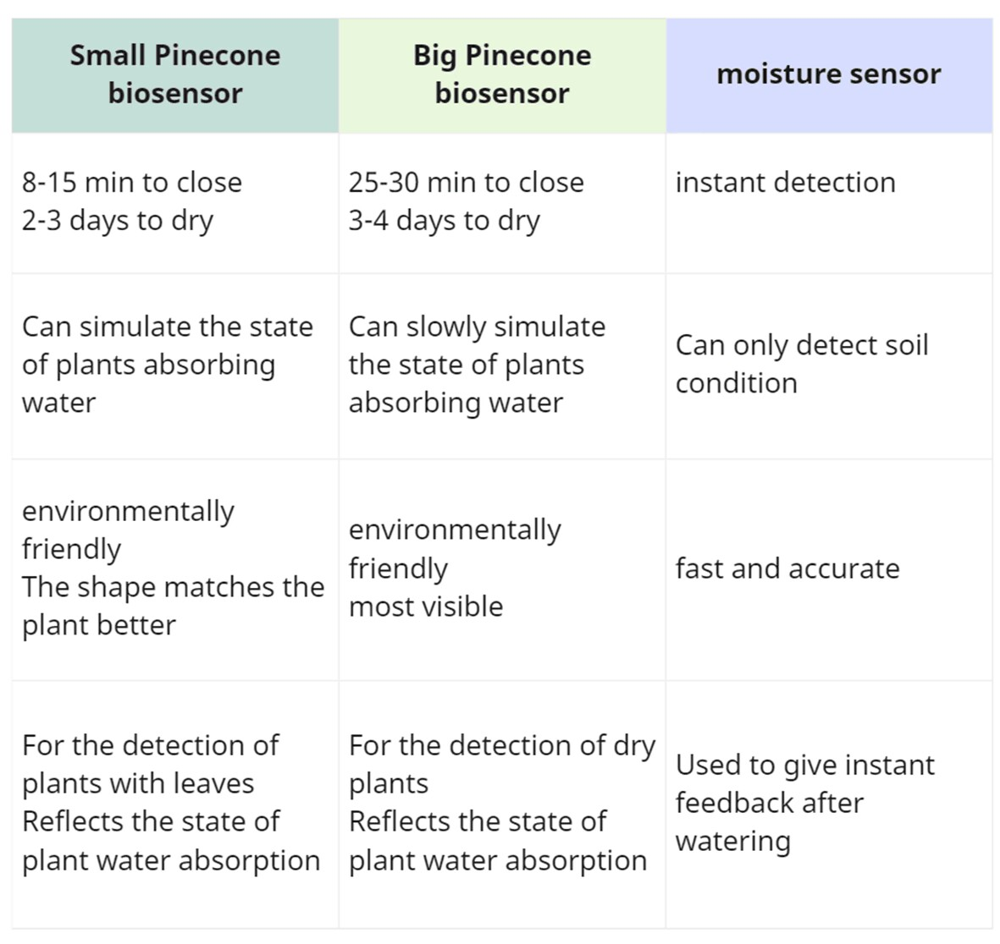
Next was the soil moisture sensor and the pine cone. The soil moisture sensor was connected to an analog pin to read out accurate moisture readings. Preparations to the pine cone were first done to turn it into a sensor. Copper conductive tape was wrapped around two of the pine cone seeds to create the two contacts. The pine cone was then connected to the Arduino similar to that of a switch. Both the soil moisture sensor and the pinecone sensor are used to determine if the plant is hydrated or not. The soil moisture sensor acts as a fast-reacting sensor, whereas the pine cone is slower-reacting and allows a delay. During the delay, Plant Companion gives out reminders to the user, allowing users to utilize this time to rehydrate and relax.
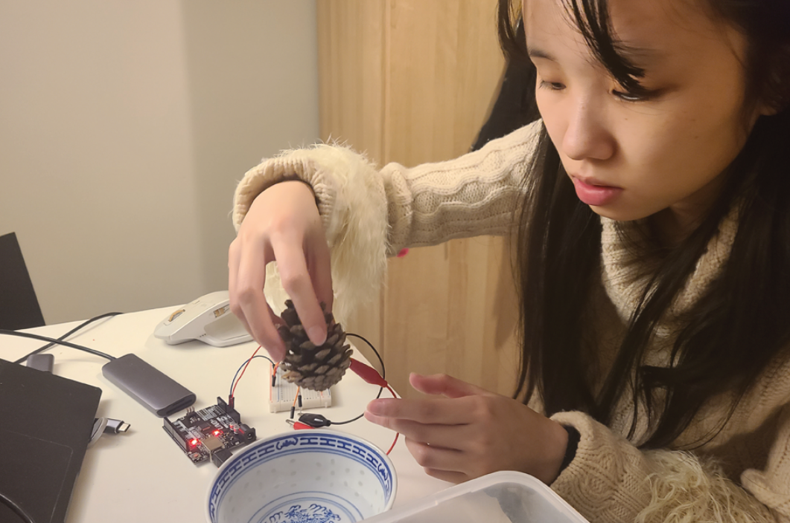
The light sensor was added next. It was a simple connection with a resistor, giving Plant Companion the ability to sense light. The LED ring and the MP3 module were added last, which are used to provide visual and sound feedback.
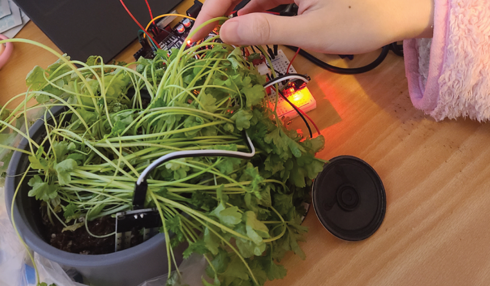
Two types of pines cones, big or small, were tested together with the moisture sensor. It was found that small pine cones match leaf plants鈥?habits better. Since I used leaf plants in this project, it was better to use small pine cones.
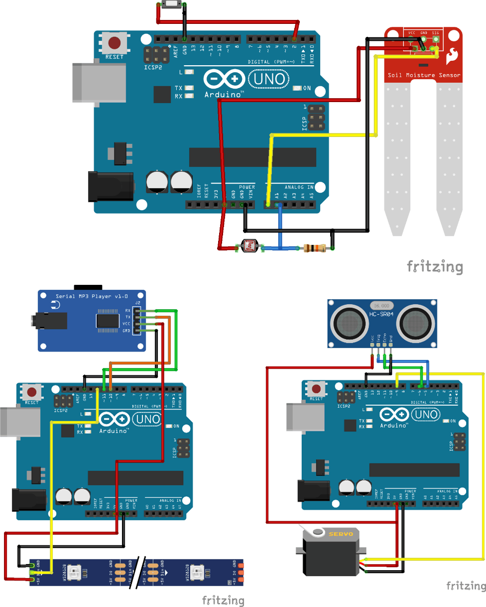
For the coding part, connecting the sensors and reading the values was not so difficult. There are two difficult parts in coding: 1. Removing delay() so that Arduino can multitask without hanging up to wait for delays. The solution, also found in an online tutorial, was to use the Millis() function to keep track of timings. 2. The different states of the prototype. Depending on the light intensity, the soil moisture, and the distance of the user, Plant Companion has to react differently and give different outputs. It was quite difficult to write if-statements to control the prototype.
The behavior of the prototype is summarized in the table below.
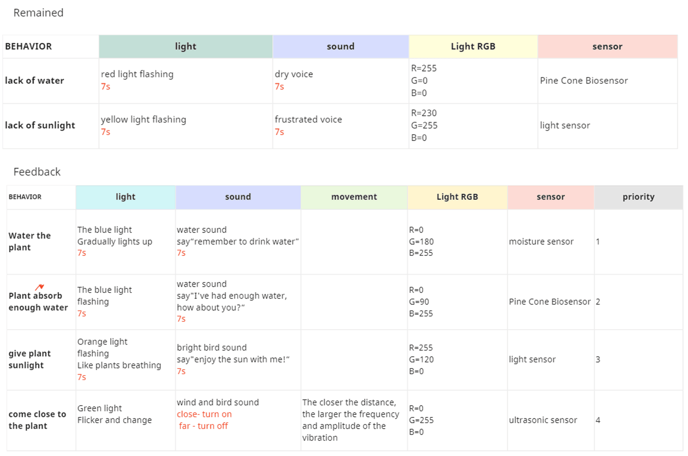
Four types of data are collected by Plant Companion, three of which are environmental data and one is user input. The three environmental data are: light intensity, soil moisture level and pine cone moisture level. The user input is the distance the user is from the plant. Three types of sensory output are provided: light, motion and sound.
Refining the prototype
In the first iteration of the prototype, the functions were working correctly. But user evaluation showed that the overall effect was not ideal. The states were too complex, and when the plant was in multiple states at the same time (eg. Lacking water and sunlight at the same time), it could only show the response of one state. This made Plant Companion seem unresponsive sometimes.
Therefore, in the second iteration, I split the moisture system (soil and pine cone) and the light sensor into two separate parts. The moisture system has control over the LED ring and the MP3 module, whereas a new individual LED was added to solely display whether the plant lacks sunlight or not. The second iteration also went through user evaluation, receiving much better feedback as the states were clearer and the plant was giving clearer responses.
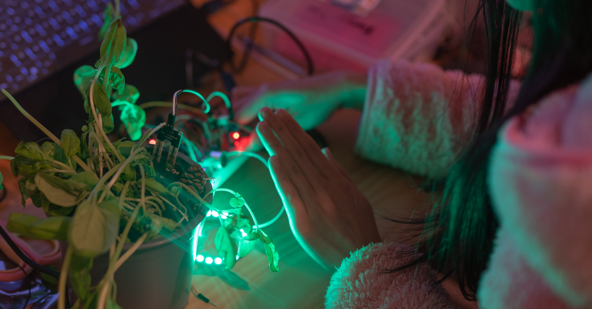
Evaluation
Introduction
User testing was chosen as the method for evaluation as it is a direct way of testing the prototype and obtaining first-hand feedback on the experience. The participants of the user tests were those who participated in the previous interview. After experiencing Plant Companion, they were then interviewed again to see if their experience with plants have changed and whether or not they have reached a solution. They were asked to evaluate Plant Companion according to these aspects:
- PHYSICAL LAYER - Form and function of the
- CULTURAL LAYER 鈥?Narrative and context of the
- INTERACTION LAYER 鈥?Design of situation,
- TECHNICAL LAYER 鈥?Intermediating between the
- AFFORDANCE 鈥?Accessibility of the interaction.[8]
interfaces;
interaction, social signifier;
usability aspects;
interaction and the physical layer.
Three participants from previous interviews were invited to participate in user testing of the evaluation. Their thoughts were recorded and analyzed to obtain suggestions for improvement.
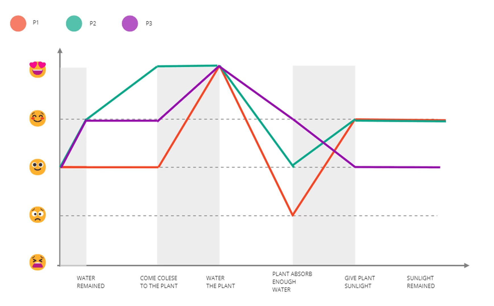
All three participants in the first part of the test preferred the second iteration.
Two participants chose decisively, and one chose after hesitation. One of the participants encountered the problem of functional conflict. When water and sunlight were lacking at the same time, only one state could be displayed, and even the inability to respond was caused. At the same time, too many color and sound prompts confuse them. In contrast, in the second iteration, light and water are divided into two different parts, which has more clear logic, and I feel clearer when I experience it. One of the participants hesitated because he thought the first iteration was cooler and he liked the cue music. But in the end, he still thinks that the second iteration brings a better overall experience.
In the second part, I asked users how satisfied they were at each stage and plotted the likert scale. The watering phase, which gave participants the most satisfaction, said they liked the sound of the phase and received timely feedback. At the same time, one participant mentioned that the plant reminded her to drink water, which surprised and warmed her, like having a friend greeting her.
- The feedback on the water absorption part is not ideal,
- The part of sunlight detection is a bit monotonous after
- User testing shows that all of the participants
because the response of the pinecone has a certain delay and the time is not very fixed. They are easy to ignore or forget, but two participants said that they think the Chinese program is very poetic and innovative.
refinement. In future work, more display forms can be considered.
displayed increased levels of interaction, excitement, and happiness when interacting with Plant Companion.
In the third part, Some problems were found.
- Reminders were ignored when participants were busy
- The LED light is a bit dazzling
- They want to be able to adjust the volume of the sound
with their own affairs or going out, so the number of repetitions of reminders needs to be considered in the future.
by themselves But most of the time, the participants will be reminded to take care of the plants by it, and at the same time, it brings joy and freshness to the participants in the beginning stage.
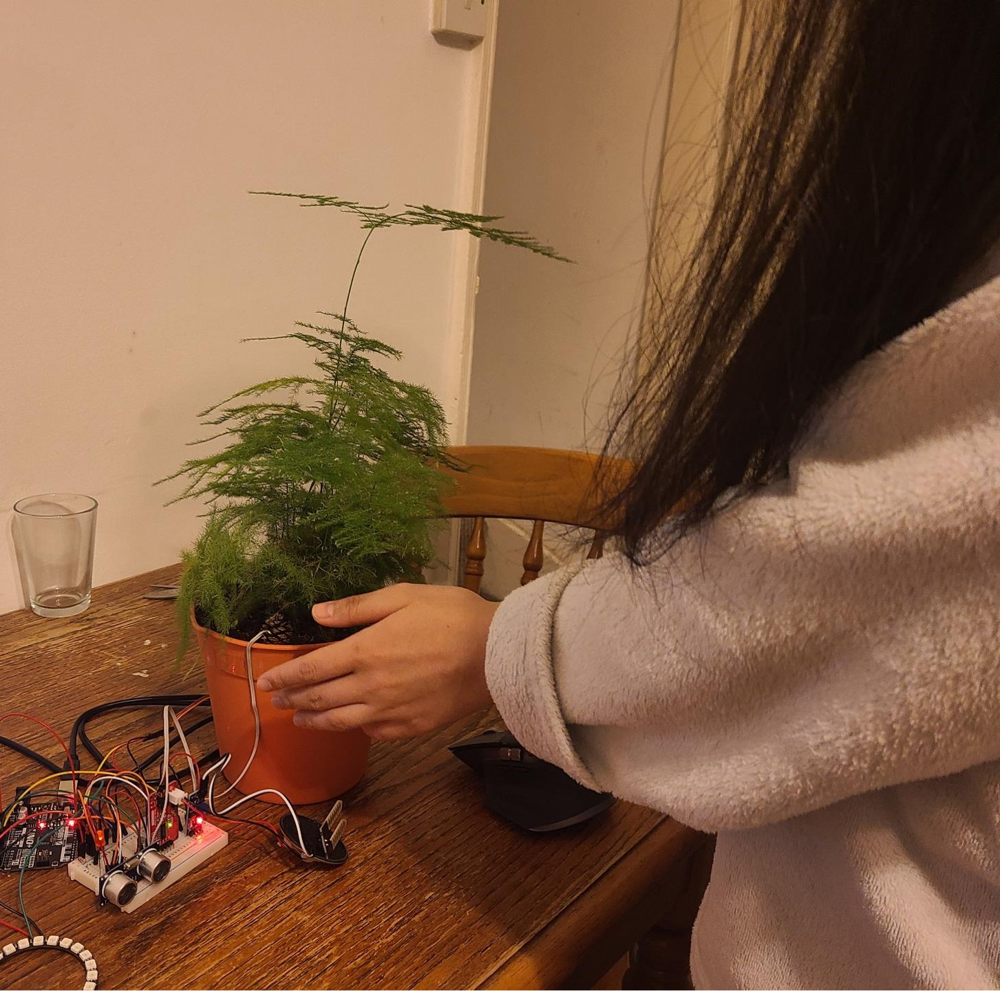
Conclusion
In this project, a human-plant interactive prototype called Plant Companion was designed as a solution to the problem of population loneliness. It provides a new concept of using plants to provide emotional support to those who are unable to keep pets. Based on the Arduino platform, Plant Companion utilizes sensors and algorithms to enhance the benefits of plants and allows plants to provide vivid interactive feedback. User evaluation was done, showing an increase of happiness when interacting with Plant Companion.
Reflection
Reflection has been carried out in the process of doing the project. Overall, the project was successful in creating a working prototype that promotes human- plant interaction. The aim of the project is to support people who are living alone through interaction with plants. There are a few points that could be improved in future prototypes: 1. The project does not go deep into how plants communicate or convey information, but instead focuses on the experience of human beings when interacting with plants. 2. It takes time for the pine cone to react to water. The pine cone closes up very slowly, therefore users are unable to visually see the pine cone closing, so they might forget about the feedback of pine cones. The project lacks a full evaluation of whether Plant Companion actually helps loneliness. 3. The project lacks an analysis of how inaccuracies of plant sensors affect the experience. 4. The servo motor might cause damage to the plant, although it is only a slight vibration.
Future Work
1. Further iterations and improvements according to the results of the user evaluation. 2. The user evaluation was conducted on only three participants, which is a small sample that could be biased. It also can鈥檛 reflect a wide range of users, therefore more extensive user evaluation should be done in the future. 3. The colour and flashing modes of the LED ring used in the prototype should have in-depth research. 4. More secondary research on white noise music should be done to prove that the chosen music is appropriate and enjoyable for users.
Nowadays, IoT (Internet of Things) is becoming a huge trend, where products are connected to the cloud to share data or utilize its the enormous computing capabilities. This also opens up a new path for Plant Companion, where environmental data could be uploaded to the internet. Users will then be able to see the status of their plants even if they are not at home. This provides many new opoortunities for interacting with plants, such as remote interaction or online interaction, which is a topic that is worthy of more research.
Acknowledgements
I would like to thank all the participants and teachers who provided helpful comments and advice for this project. Thanks to the design school for the component funding and materials.
REFERENCES
[1] D. Clark. 2022. People living alone UK 2021, by age and gender. (April 2022). Retrieved January 1, 2023 from https://www.statista.com/statistics/531386/people-living-alone-uk-age-and-gender/ ACM.
[2] B. Martin, B. Hanington, and B.M. Hanington. 2012. Universal Methods of Design: 100 Ways to Research Complex Problems, Develop Innovative Ideas, and Design Effective Solutions. Rockport Publishers.
[3] DelSesto, M., 2020. People鈥損lant interactions and the ecological self. Plants, People, Planet, 2(3), pp.201-211.
[4] Seow, O., Honnet, C., Perrault, S. and Ishii, H., 2022. Pudica: A Framework For Designing Augmented Human-Flora Interaction. In Augmented Humans 2022 (pp. 40-45).
[5] SpulberGeorge (2023). EasyUltrasonic. [online] GitHub. Available at: https://github.com/SpulberGeorge/EasyUltrasonic [Accessed 13 Jan. 2023].
[6] www.theamplituhedron.com. (n.d.). How to use the Serial MP3 Player (UART) with Speaker byOPEN-SMART with Arduino. [online] Available at: https://www.theamplituhedron.com/articles/How-to-use-the-Serial-MP3-Player-UART-with-Speaker-by-OPEN-SMART-with-Arduino/ [Accessed 13Jan. 2023].
[7] docs.arduino.cc. (n.d.). Servo Motor Basics with Arduino | Arduino Documentation. [online] Available at: https://docs.arduino.cc/learn/electronics/servo-motors.
[8] Hornecker, E. (2012). 鈥淏eyond affordance: Tangibles鈥?hybrid nature鈥? In Proc. TEI鈥?2, ACM, 175-182.